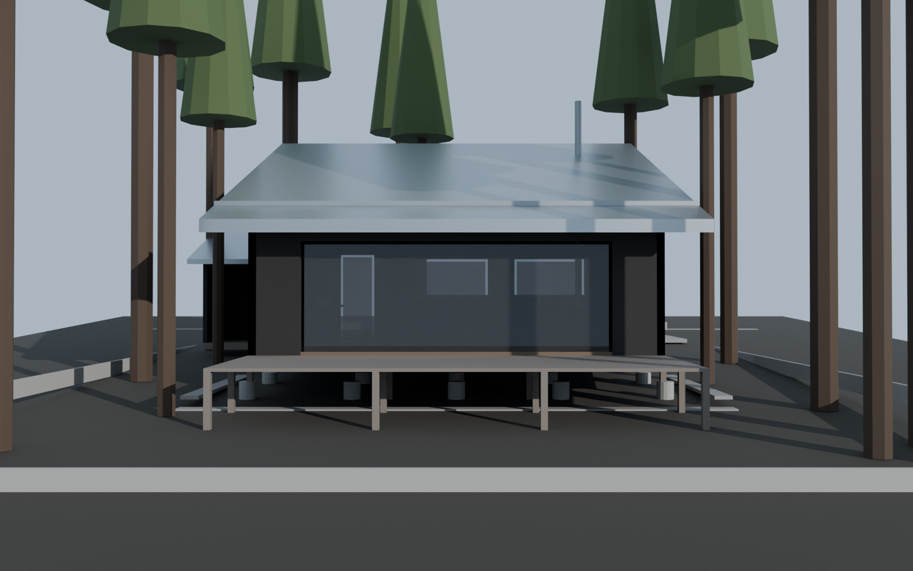
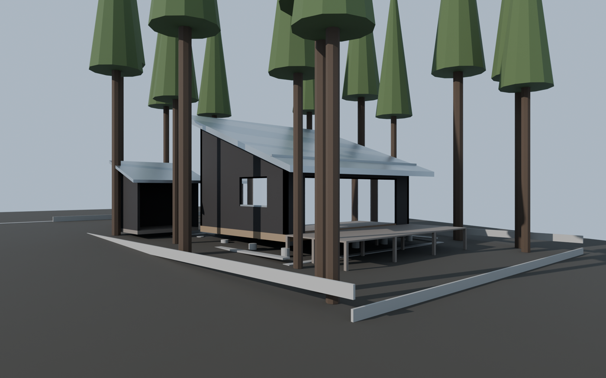
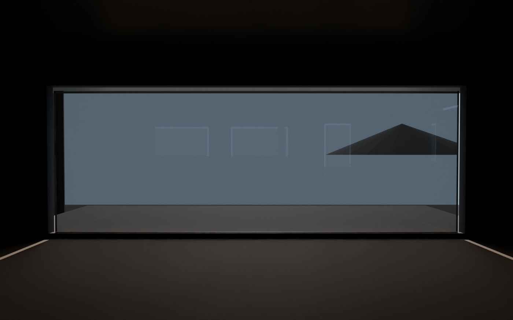
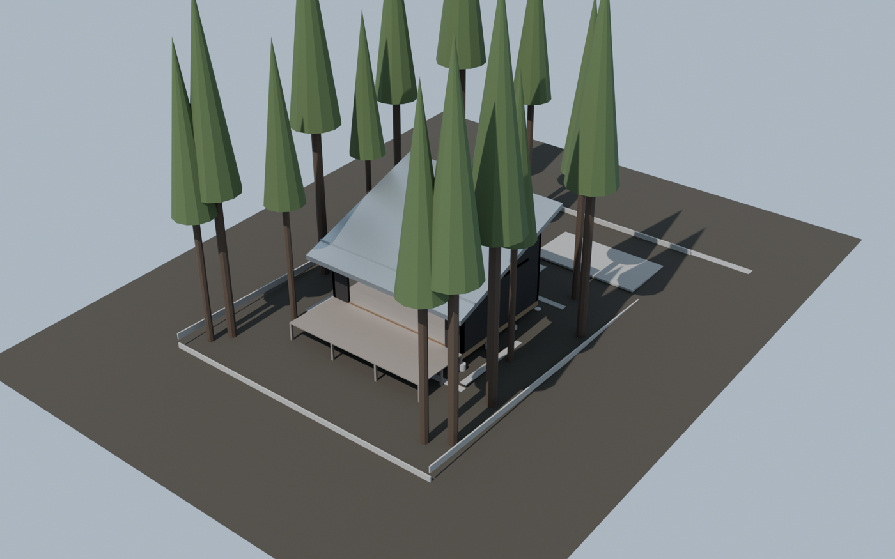

← レポートハブ
MOVING ・ DESIGN BASE FOR CG
🏔 北軽井沢 セルフビルド小屋 ― CG設計ベース
実現性の検証ではなく、CGで起こすために寸法・方位・地形・光を全部固定した版。
座標系は右手系メートル、原点＝敷地南西隅のGL±0、+X=東 / +Y=真北 / +Z=上でBlender標準と一致する。
数値の単一の情報源は design/spec.json、この頁とBlenderスクリプトはどちらもそこから生成・参照する。
① 敷地
実在の分譲事例（274㎡／100万円帯）を下敷きにした想定区画。地形は北軽井沢の緩傾斜地として単純化した
配置図 ― 敷地 14.0×19.5m / 北→南 5%下り / 等高線0.25m
| 想定地 | 群馬県吾妻郡長野原町大字北軽井沢（別荘分譲地内の一区画・想定） |
|---|
| 敷地 | 14.0 × 19.5 m ＝ 273.0㎡（82.6坪） |
|---|
| 標高 / 緯度 | 1100 m ／ 36.55°N 138.6°E |
|---|
| 地形 | 北→南へ 5%（1/20）の下り。地盤高 z = 0.05 * y。南端 ±0.00 / 北端 +0.975 |
|---|
| 接道 | 北側・砂利 W=4.0m |
|---|
| 地盤 | 浅間山起源の火山灰質黒土＋軽石層（水はけ良）／落葉層 |
|---|
| 凍結深度 / 積雪 | 想定 0.9 m ／ 設計 0.6 m |
|---|
| 眺望 | 浅間山：方位 203°・17.4km・見かけの仰角 4.8° |
|---|
| 植生 | カラマツ（落葉針葉樹・樹高12〜18m・幹径0.25〜0.40m）／シラカバ点在／下草 クマザサ |
|---|
南に向かって下る地形なので、南の大開口＝浅間方向＝下り方向が揃う。
地盤高は z = 0.05 × y の一次式なので、CG側は平面を1枚傾けるだけで再現できる。
② 建物
平屋・延べ39.7㎡。910mmグリッドに全部載せてあるので、部材も再利用材の割付けもグリッドで拾える
平面図 ― 910グリッド / 独立基礎20基 / FL=GL+1,050
断面図（南北）― 南が低い片流れ。軒の出900mmで夏の日射を切り、冬は床奥まで入れる
南立面 ― 焼杉（黒）の壁にガルバの軒。南面は6P分をまるごと開口
| 構法 | 在来木造・平屋・910mmグリッド |
|---|
| 平面 | 7.28 × 5.46 m ＝ 39.75㎡（12.0坪） |
|---|
| 床高 FL | GL+1,050（絶対 Z=+1.05 m） |
|---|
| 屋根 | 片流れ・北高南低・勾配 3.5寸（19.29°） |
|---|
| 軒高 | 南 Z+3.45 → 北 Z+5.361 |
|---|
| 軒先高 | 南 Z+3.135 ／ 北 Z+5.571 |
|---|
| 軒の出 | 南 900 ／ 北 600 ／ 東西 600 mm |
|---|
| 天井 | 天井なし・登り梁現し（室内高 南2.40m → 北4.31m） |
|---|
| 基礎 | 独立基礎（現場打ちコンクリート φ300） 20基・根入れ 1.0m（根入れ1.0m＝想定凍結深度0.9mより深く） |
|---|
| 架構 | 土台 105×105 ／ 柱 105×105 @1820 ／ 間柱 45×105 @455 ／ 登り梁 105×240 @910（南北方向・勾配なり） ／ 野地板 12mm |
|---|
| デッキ | 19.87㎡・FLと同レベル・中古足場板 200×35（色ムラをそのまま意匠に） |
|---|
| 別棟 | 別棟：薪小屋＋物置 4.97㎡（中古グラスウールの行き先。非居室なので断熱の賭けが効く） |
|---|
| 便所 | コンポストトイレ（凍結リスクを設計で回避。中古便器は寒冷地仕様の壁があるため不採用） |
|---|
③ 開口
u は壁に沿った座標（南北面ならX、東西面ならY）。z は絶対高さ
| ID | 面 | 幅 mm | 高 mm | 下端 Z | 仕様 |
|---|
| S1 | 南 | 5,460 | 2,000 | +1.05 | 掃き出し（新規・木製サッシ+Low-Eペア） |
| N1 | 北 | 800 | 2,000 | +1.05 | 玄関ドア（古材・木製 800×2000） |
| N2 | 北 | 1,650 | 900 | +2.05 | 中古アルミサッシ 引違い 1650×900 |
| N3 | 北 | 1,650 | 900 | +2.05 | 中古アルミサッシ 引違い 1650×900 |
| E1 | 東 | 1,820 | 600 | +3.60 | ハイサイドライト 1820×600（朝日） |
| W1 | 西 | 1,650 | 1,100 | +1.95 | 中古アルミサッシ 引違い 1650×1100（西日・浅間の裾） |
④ 再利用材をどこに落とすか
「もらってくれるならあげる」側の材料を、CG上で意味が出る位置に割り当てた
| 再生砕石 | 解体ブロック塀を割ったもの。駐車 24.8㎡＋アプローチ＋雨落ち帯の全面。構造には一切使わない（凍上で持ち上がるため） |
|---|
| 中古の陶器洗面ボウル | 北西の窓下に古材カウンターで据える。再利用材の中で唯一そのまま使える衛生陶器 |
|---|
| 石膏ボード | 新築現場の端材 t12.5 を内装下地に。継ぎ目をパテ埋めせず素地現し＋クリアでランダムな目地割りをそのまま意匠にする。CG内観の主題 |
|---|
| 中古グラスウール | 主屋には使わず別棟の薪小屋へ。寒冷地の居室断熱は建物寿命に直結するため賭けない |
|---|
| 足場板・古材 | デッキ床 t35／内部床 t30／洗面カウンター。色ムラをテクスチャの素材にする |
|---|
| 中古アルミサッシ | 北面の小窓2つ・西面1つ。南面の主開口だけは新規のペアガラスにして断熱の芯を通す |
|---|
⑤ 材料パレット（PBR用）
Base Color は sRGB。Blenderスクリプト側でリニア変換して Principled BSDF に入る
| キー | 仕様 | sRGB | Rough |
|---|
| roof | ガルバリウム鋼板 立平葺き 0.4mm（シルバー）＋雪止め1段 | #b9bfc2 | 0.35 |
|---|
| wall_ext | 焼杉 t12 縦張り（黒） | #241f1d | 0.8 |
|---|
| wall_int | 石膏ボード t12.5・新築現場の端材を継ぐ／目地を見せる素地現し＋クリア | #e8e2d6 | 0.9 |
|---|
| floor_int | 足場板古材 t30 | #8a7256 | 0.7 |
|---|
| deck | 足場板古材 t35 | #7d7268 | 0.85 |
|---|
| gravel | 解体ブロック塀の再生砕石（グレー〜灰白、角ばった粒） | #9a9691 | 0.95 |
|---|
| concrete | 現場打ちコンクリート | #a8a49e | 0.85 |
|---|
| sash_alu | 中古アルミサッシ（シルバー・経年） | #9fa4a6 | 0.45 |
|---|
| sash_wood | 木製サッシ（新規） | #6b5540 | 0.6 |
|---|
| glass | Low-Eペアガラス | — | 0.02 |
|---|
| terrain | 火山灰質黒土＋落葉 | #3b352c | 1.0 |
|---|
⑥ 光環境
北軽井沢 36.55°N。南中は JST 約11:46（経度差 3.6°）。冬至南中30.0° / 分53.5° / 夏至南中76.9°。南軒の出900mmで、夏至南中は南壁を全面日陰、冬至南中は窓上端から0.43m下の高さまで影がかかり、それより下は日射が入って床の奥（北壁際）まで届く。
| ID | 条件 | 方位角 | 高度 | 色温度 |
|---|
winter_solstice_9h | 冬至 9:00（真太陽時） | 137.4° | 16.5° | 4200 K |
winter_solstice_noon | 冬至 南中 | 180.0° | 30.0° | 5000 K |
equinox_noon | 春秋分 南中 | 180.0° | 53.5° | 5600 K |
summer_solstice_noon | 夏至 南中 | 180.0° | 76.9° | 6000 K |
summer_solstice_17h | 夏至 17:00（真太陽時） | 281.4° | 25.3° | 3600 K |
方位角は真北から時計回り。Blenderの Sun は
rotation_euler = (radians(90 − alt), 0, radians(180 − az)) で一致する。
カラマツは落葉針葉樹なので、冬カットでは樹冠を落として幹だけにすると光の入り方が実際に近づく
（--winter オプション）。
⑦ カメラ
4カットぶんの位置・注視点・画角。各カットに既定の太陽プリセットを紐づけてある
| ID | カット | 位置 (x,y,z) | 注視点 | 画角 | 太陽 |
|---|
south_winter | 南から・冬の朝 | 7.14, -9.5, 2.1 | 7.14, 8.7, 2.3 | 35mm | winter_solstice_9h |
southwest_summer | 南西から・夏の夕 | -7.0, -6.0, 2.6 | 7.14, 9.0, 2.6 | 28mm | summer_solstice_17h |
interior_south | 内観・南を見る | 7.14, 10.6, 2.15 | 7.14, -5.0, 1.9 | 24mm | winter_solstice_noon |
aerial | 俯瞰・敷地全体 | 34.0, -24.0, 27.0 | 7.0, 9.75, 1.5 | 45mm | equinox_noon |
⑧ 参考レンダ
Cycles・48サンプルで書き出したマッシングの現状。内装のマテリアル分けと軸組はまだ入っていない

南から・冬の朝／35mm・太陽 winter_solstice_9h

南西から・夏の夕／28mm・太陽 summer_solstice_17h

内観・南を見る／24mm・太陽 winter_solstice_noon

俯瞰・敷地全体／45mm・太陽 equinox_noon
内観カットの開口の中に浅間山のプロキシが写り込んでいる。眺望の方位（203°）と開口の位置関係は
これで検証できている。内側の面にまだ外壁材が付いているので内装が黒いのは既知（design/HANDOFF.md 参照）。
⑨ 立てかた
spec.json を読んでマッシングを丸ごと生成する。地形・敷地境界・基礎・軸組・屋根・デッキ・別棟・砕石・樹木・太陽・カメラまで入る
# GUIで開いて確認する
blender --python design/blender_hut.py
# 冬（カラマツ落葉）で開く
blender --python design/blender_hut.py -- --winter
# 4カットまとめて書き出す
blender --background --python design/blender_hut.py -- out/
# 高品質・GPU(Metal)
blender --background --python design/blender_hut.py -- out/ --samples=128 --gpu
# 寸法の辻褄を検算
python3 design/check_spec.py
macOSでの手順・既知の粗さ・次にやることは design/HANDOFF.md にまとめてある。
寸法を変えたいときは design/spec.json だけを触る。
この頁は python -m design.make_hut_page で作り直せるので、図面とモデルがずれない。